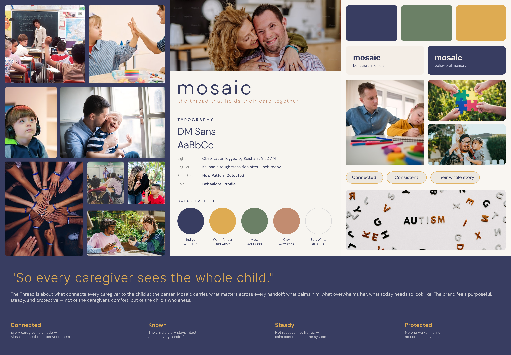

Mosaic is a behavioral memory app for parents and aides supporting teens with autism. Voice notes from every caregiver build a shared, living record, so the next person who steps in already knows what works.
This started from a close personal relationship with someone on the spectrum, and watching the people around them coordinate care across four, sometimes five different caregivers: a parent, an aide, a paraprofessional at school, an ABA therapist, occasionally a substitute teacher. Each person knew something true about the teen. Nobody saw the whole picture. The parent became the translator between five incompatible systems, WhatsApp, Google Docs, a paper binder, sticky notes, and carried the cost of that in their nervous system. I wanted to know if a tool could externalize that operating manual without making the act of contributing feel like a documentation project.
What's broken today
💬
Group textsUrgent updates lost in scroll within hours.
📄
Google DocsGoes stale within weeks, no one updates it.
📔
Paper bindersDon't travel with the teen between caregivers.
🗒️
Sticky notesDisappear, get reordered, lose context.
🏥
Clinical ABA toolsBuilt for therapists, not families.
None of these were built for cross-caregiver behavioral knowledge transfer. The result is information loss at every handoff: a new aide spends four to five months learning through trial and error what proper onboarding could compress to days. Substitute teachers walk in cold. Therapists hear a verbal summary instead of pattern data.
The deeper failure is that the parent becomes a single point of failure. They're the only person who holds the full picture, and they know it. One participant described sitting by their kid's bed thinking "what happens if I can't come home next time?" That's the existential cost of fragmented coordination.
Why now
CDC ADDM Network · 2024
1 in 36
U.S. children with autism
Up from 1 in 150 in 2000. The caregiver population is growing faster than the tools serving them.
Research
Where the friction actually lived
Who I talked to
Three phases of research, building toward primary interviews.
01
Secondary research
CDC autism prevalence data, caregiver-burnout literature, and a competitive landscape teardown of every tool autism parent communities have tried and abandoned: Cozi, Goally, CentralReach, group texts, Notion.
Desk research
→
02
Synthetic interviews
Three carefully constructed participant profiles to stress-test hypotheses and refine the discussion guide before going into fieldwork.
3 profiles
→
03
Primary interviews
Three real caregivers using validated discussion guides. Two parents (one early-adopter, tech-comfortable; one resource-constrained, institution-routed) and one in-home aide. n=3+ was enough to validate or partially validate every primary hypothesis with meaningful nuance.
3 caregivers
Time scarcity14 stickies
Knowledge silos11 stickies
Tool fatigue9 stickies
Power dynamics8 stickies
Behavioral patterns7 stickies
Handoff failures6 stickies
Mortality anxiety4 stickies
Trust + safety3 stickies
Identity + role2 stickies
9 themed clusters across 64 stickies, color-coded by participant
Three insights that shaped the concept
01
The 30-second contribution barrier is real and non-negotiable.
Aides won't engage with any tool that takes longer than thirty seconds at the end of a shift. Voice memo, not typing. This single constraint reshaped the entire input architecture.
"If it takes more than 30 seconds, I'm not doing it."
Keisha Williams · in-home aide
02
The deepest driver isn't efficiency, it's mortality fear.
I went into research expecting parents to ask for productivity. They asked for portability. The real product job isn't saving thirty minutes a day. It's making the parent's knowledge transferable in case something happens to them.
"If I'm not there, it's gone."
Marcus Webb · primary caregiver
03
Power asymmetry silences observations that should travel upward.
Aides notice patterns no one else can. But they often don't share what they see, fearing being read as critical or unprepared. Any tool that ignores this dynamic will fail at the multi-caregiver level.
"I notice patterns. I see things. But I don't always know how to share them, or if I should."
Open the app. Tap a voice button. Talk into it for fifteen, twenty seconds: "Arjun woke at 5:30 again, refused breakfast, third Tuesday in a row." That's it. AI transcribes the memo, infers the environment, mood, and topic tags, and lands the observation in a shared timeline visible to every caregiver on the team.
Other caregivers do the same. The aide records hers at the end of her shift, the school para drops a note at lunch. Over time, the timeline becomes pattern-rich enough that the AI surfaces cross-environment correlations the parent or aide couldn't have spotted alone: "rough mornings correlate with poor sleep AND new bus driver." The parent validates the pattern, then generates a one-page summary scoped specifically for the substitute teacher coming in Thursday: sensory needs included, mental health notes excluded. Send. Done. The substitute opens it on their phone, no install required.
Where it lives in the market
Competitive landscape: Mosaic targets the underserved upper-right quadrant
Clinical ABA tools (CentralReach, Catalyst) sit upper-left: high behavioral intelligence, low family-friendliness. General care apps (Cozi, CareZone) sit lower-right: family-friendly but not behavioral. The upper-right corner, high behavioral intelligence + high family-friendliness, is empty. That's the seat Mosaic is built for.
The design decisions
Why voice-first?Research showed a thirty-second contribution ceiling for aides. Only voice fits.
Why "behavioral memory" as a category?No existing tool frames the problem as knowledge transfer between caregivers. Clinical tools collect data for therapists. Family apps manage calendars. The most valuable artifact in autism caregiving today isn't a schedule, it's the lived behavioral knowledge that exists only in one person's head.
Why dual-interface?Same data, two needs. Parents want depth. Aides need friction-free contribution. The asymmetry is the design: same shared content layer, two interfaces that respect the different ways each caregiver shows up.
Brand and visual language

Mosaic moodboard: visual language and brand direction
Mosaic's visual language is built around warmth, calm, and care, in deliberate contrast to the clinical aesthetic of ABA tools. Soft tones, breathing layouts, and conversational type signal that this is a tool built for families, not for therapists.
Same data, two interfaces
Dual-interface: Aide Today (left) and Home Parent (right) drawing from the same content layer
The aide gets two tabs and a thirty-second voice button. The parent gets five tabs and full authority over the behavioral profile. Both surfaces read from and write to the same shared content model.
Features
Five core features
30-second voice log
Voice-first capture from anywhere in the app. AI handles transcription, environment inference, mood tagging, and topic categorization after capture. Zero structured data entry required at the point of logging. This is the enabler for everything else.
Shared 24-hour timeline
Chronological feed of observations from every caregiver, with attribution, environment chips, and mood signals. Replaces the five fragmented systems with one source of truth. Filterable, searchable, and exportable for therapy or IEP prep.
AI pattern detection
Cross-environment correlation across observations, with confidence scoring (low / medium / high). Patterns surface only above a confidence threshold. Research showed false positives kill trust faster than any feature gap. Validate / dismiss workflow lives on the same card as the pattern itself, no detail-view jump required.
One-page summary with per-recipient privacy
Auto-assembled handoff document scoped specifically for the recipient. Substitute teacher gets sensory needs and behavioral triggers, omits mental-health notes. Therapist gets the full picture. Shareable link, no install required for the recipient. The substitute teacher use case dies the moment you ask them to download an app.
Dual-interface design
Parent app is five tabs (Home, Teen, Team, Insights, Share) with rich profile management. Aide app is two tabs (Today, read-only Profile) with a persistent voice-log FAB. Same shared content layer underneath. The asymmetry is the design: aides log observations and suggest triggers and strategies upward, but parents hold authority over the Behavioral Profile.
State
Where it is right now
Artifacts produced this semester
Concept stage, pre-build. The artifacts produced this semester:
Market Requirements Document. Personas, hypothesis-and-validation, market sizing, unit economics, ten-stage customer journey from crisis awareness through advocacy.
Information architecture. Every destination across both apps mapped to a shared ten-entity content layer.
Feature map. Five user-job stages × two persona swim-lanes, with v1 / v2 / v3 release sequencing.
Two end-to-end user flows. The parent's log → pattern → share loop, and the aide's start-of-shift quick-reference plus thirty-second contribution.
Eight lo-fi wireframes + three hi-fi mockups of the highest-value screens.
12-week sprint plan for v1 build.
MVC technical one-pager defending the native-for-caregivers + mobile-web-for-recipients architecture.
Affinity map and content model in FigJam from research synthesis.
Customer journey: 10 stages from crisis awareness through advocacy
Unit economics
Early-adopter segment carries an LTV:CAC of ~7.5×, payback in 4 to 5 months, with 25 to 30% free-to-paid conversion gated structurally on the third caregiver invite. Late-adopter segment has materially different economics that depend on institutional partnerships, sequenced for v2.
Validation
Three real caregiver interviews validated all three primary hypotheses. One partially (knowledge transfer is real but reframed as a systems-architecture problem, not a documentation problem), two fully (pattern blindness across environments, and the existential succession anxiety that drives adoption). The thirty-second contribution barrier and the power-asymmetry dynamic both emerged from this round and shaped the dual-interface design. The wireframes haven't been usability-tested with caregivers yet. That's the next step before any build commitment.
Reflection
What I'd test first
1. Get the wireframes in front of the same caregivers who shaped the research, particularly Keisha (aide) and Marcus Webb (resource-constrained parent), because v1 lives or dies on whether the thirty-second contribution barrier actually clears in practice.
2. Build a clickable Figma prototype of the log → pattern → share flow specifically. That's the moment Mosaic earns the right to charge, and it's the highest-leverage piece to test before any code gets written.
3. Open a partnership conversation with an autism organization or pediatric ABA clinic. The late-adopter segment can't be reached through consumer marketing. Adoption goes through institutional endorsement, and the v2 go-to-market depends on having one of those relationships in motion before the v1 launch.
Open questions I'm sitting with
Is AI pattern detection actually accurate enough at low data volumes to surface useful patterns in the first ninety days? Without that early "we noticed" moment, the habit doesn't form. Without the habit, the network effects don't kick in.
Does the dual-interface design actually change aide engagement in real homes? That's the bet the whole product rests on.
Will institutional endorsement (therapist or school recommending the tool) materialize organically through the early-adopter cohort, or does it need to be engineered?
"I notice patterns. I see things. But I don't always know how to share them, or if I should."
Keisha Williams · in-home aide
The product I want to build is the one that earns the right to hear that observation, every shift, from every aide.